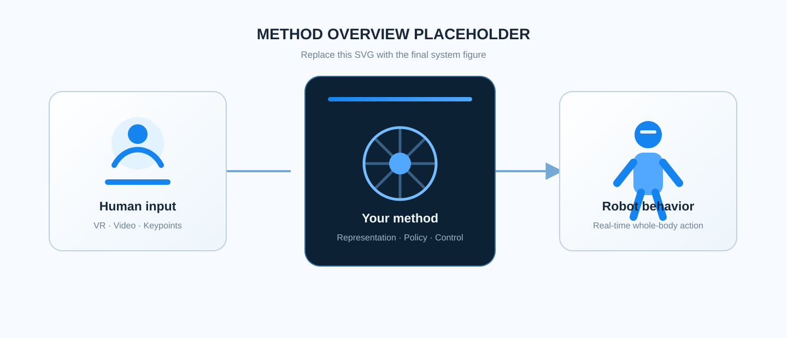

01
Overview video
Use a concise caption to tell viewers exactly what the video demonstrates.
Research project
An optional subtitle can explain the central idea in one sentence.
1 Your Institution 2 Collaborating Institution
* Equal contribution
Add an acceptance note, release update, or one important announcement here.
Overview
A single strong video should communicate the project before the technical details begin.
Use a concise caption to tell viewers exactly what the video demonstrates.
Paper
Replace this paragraph with the paper abstract. A strong project page abstract usually starts with the problem, identifies the limitation of previous approaches, introduces the proposed method, and closes with the most important experimental result.
Keep this section readable and restrained. Detailed implementation notes belong in the method section, while the visual evidence should stay close to the demo videos below.
State the first contribution in one short, concrete sentence.
Prefer measurable claims over broad or generic descriptions.
Connect the contribution to the result viewers can see on this page.
Motion tracking
Real-time tracking across locomotion, balance, and challenging low-height transitions.
Track forward locomotion from a live human demonstration.
Reproduce coordinated side steps while preserving upper-body alignment.
Track a sustained single-leg pose with coordinated whole-body balance.
Follow a continuous squat-to-sit, waving, and standing sequence.
Transition to a two-knee kneel while preserving expressive upper-body motion.
Track continuous rotational movement with coordinated stepping and body orientation.
Dexterous manipulation
Parallel tracking of diverse articulated hand poses, gestures, and grasp configurations.
Sixteen dexterous hands reproduce a diverse set of coordinated gestures and grasps.
Loco-manipulation
Long-horizon demonstrations combining locomotion, posture transitions, and object interaction.
Approach a workspace, manipulate objects, and transition through whole-body postures.
Carry and reposition a tote while navigating a cluttered indoor workspace.
Coordinate reaching, contact, and locomotion to pass through a closed door.
Squat, reach, and retrieve an object from a low shelf using whole-body coordination.
Approach
Lead with one readable system diagram, then explain the method in a few focused blocks.

Explain what signals enter the system and how they are represented.
Summarize the central algorithm without reproducing the entire paper.
Describe runtime inputs, outputs, hardware, and real-time characteristics.
Evaluation
Use a small number of honest, legible metrics instead of reproducing a dense paper table.
Dataset or benchmark name
Compared with the strongest baseline
Measured on the deployment platform
Add the experimental protocol, number of trials, or other context needed to interpret the headline metrics correctly.
Citation
If this work helps your research, please cite it.
@article{teleopit2026,
title = {TeleopIt: Your Complete Project Title},
author = {First Author and Second Author and Third Author},
journal = {arXiv preprint},
year = {2026}
}